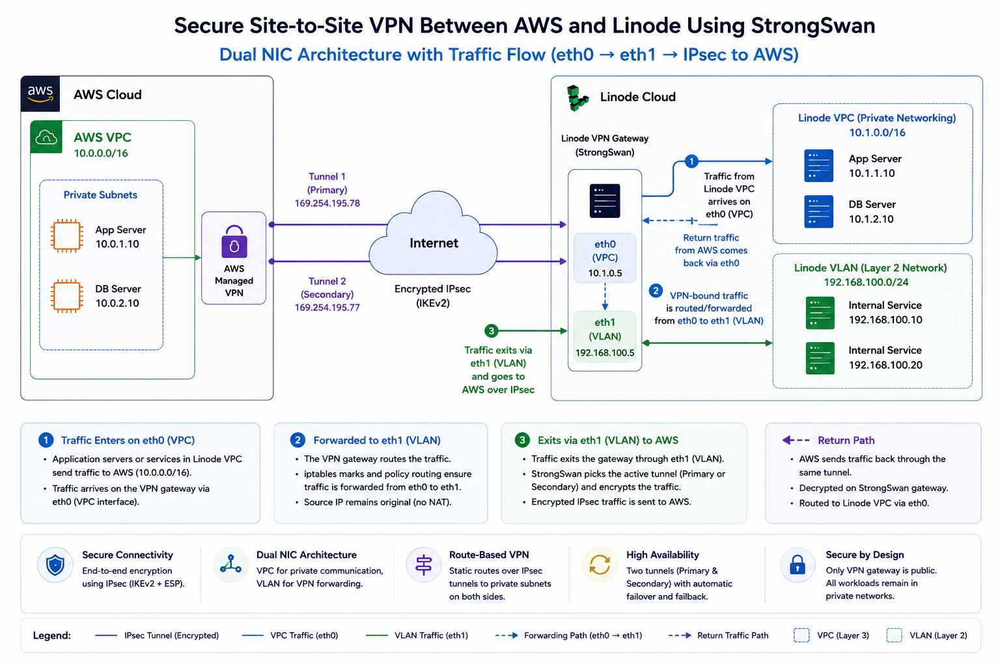

Secure Site-to-Site VPN Between AWS and Linode Using StrongSwan
Audience: Cloud architects, platform engineers, DevOps teams, and operations teams building hybrid cloud connectivity between AWS and Akamai Cloud Compute.
Summary: This article explains how to build a secure site-to-site VPN between AWS and Linode using AWS Managed VPN, StrongSwan, Linode VPC, Linode VLAN, and a dual-NIC VPN gateway architecture. It also explains why VPC-only forwarding can fail, why VLAN solves the packet-forwarding challenge, and how to add automatic tunnel failover and failback.
Introduction
Hybrid and multi-cloud architectures are becoming common for modern platforms. Organizations often run workloads across multiple clouds for disaster recovery, cost optimization, regional expansion, data locality, or to reduce dependency on a single provider.
One of the first requirements in any hybrid architecture is secure private connectivity between environments. Public APIs may be sufficient for some integrations, but many production workloads require private, encrypted communication between subnets.
In this article, I will walk through a production-ready architecture for connecting an AWS VPC with Linode private workloads using StrongSwan on Linode and AWS Managed Site-to-Site VPN.
The design uses:
- AWS Managed Site-to-Site VPN
- StrongSwan VPN gateway on Linode
- Linode VPC for private workloads
- Linode VLAN for VPN packet forwarding
- Dual NIC architecture
- Route-based IPsec tunnels
- Custom routing and firewall marks
- Automatic tunnel failover and failback
Key insight
The most important design decision is not just which VPN software to use. It is how the Linode VPN gateway is connected to the rest of the Linode environment.
A VPC-only design may allow the VPN gateway itself to reach AWS, but forwarding traffic from other private Linodes through that gateway can fail because of source IP validation and anti-spoofing behavior. A dual-NIC design using VPC + VLAN solves this cleanly.
Architecture overview
At a high level, the architecture consists of an AWS Managed VPN on the AWS side and a StrongSwan VPN gateway running on Linode.

Figure 1: Dual NIC architecture using StrongSwan. Private Linode workload traffic arrives on the VPC interface (eth0), VPN-bound traffic is forwarded to the VLAN interface (eth1), and encrypted IPsec tunnels connect to AWS Managed VPN.
The StrongSwan VPN gateway uses a dual-network-interface design. Traffic from private Linode workloads first arrives on the VPC interface (eth0). The gateway then forwards AWS-destined traffic to the VLAN interface (eth1), where it is encrypted using IPsec and transmitted through AWS Managed VPN tunnels.
Return traffic follows the reverse path: AWS → IPsec Tunnel → eth1 → StrongSwan → eth0 → Linode VPC.
The VPN gateway uses two network interfaces:
| Interface | Purpose | Role in the design |
|---|---|---|
| eth0 | Linode VPC | Private communication between Linode workloads |
| eth1 | Linode VLAN | VPN packet forwarding and AWS-destined traffic |
The unexpected problem: why VPC alone is not enough
When building the first version of this architecture, it is natural to deploy the VPN gateway inside a Linode VPC and route private Linode traffic through it.
Initially, the design appears to work:
- The IPsec tunnel comes up.
- The StrongSwan server can reach private AWS IPs.
- AWS tunnel status shows established.
However, the problem appears when another private Linode behind the VPN gateway tries to reach AWS:
Private Linode
↓
VPN Gateway
↓
AWS Private IPEven with static routes, IP forwarding, and firewall rules in place, traffic forwarding can fail.
The real reason: VPC anti-spoofing
Linode VPC is designed with source IP validation and anti-spoofing controls. That is good for security because it prevents one instance from pretending to be another instance on the network.
However, this also means a VPN gateway cannot always forward packets that originated from another Linode instance using a different source IP. In other words, the gateway may be allowed to send traffic using its own IP, but it cannot freely forward traffic on behalf of other instances inside the VPC.
Important: A VPC-only design can make the VPN server itself work, but the design may fail when private workloads behind the VPN gateway need to route through it.
Why VLAN solves the packet-forwarding challenge
A Linode VLAN provides a Layer 2 network segment that gives you more control over packet forwarding and routing behavior. For a VPN gateway use case, this is extremely useful because the gateway needs to forward packets between networks.
Using VLAN for the VPN traffic provides:
- Custom routing control
- Packet forwarding flexibility
- Clean separation between internal private traffic and VPN traffic
- Better compatibility with StrongSwan route-based VPN design
The result is a cleaner architecture:
eth0 → Linode VPC
Internal private communication
eth1 → Linode VLAN
VPN forwarding path to AWSWhy not use GRE as a workaround?
GRE can sometimes be used to encapsulate traffic and work around forwarding restrictions, but it introduces operational complexity.
GRE has several drawbacks in this design:
- It is point-to-point by design.
- Each private instance may require additional tunnel configuration.
- It increases debugging complexity.
- It is not ideal when one side of the architecture uses managed cloud services.
For a production hybrid cloud VPN, VPC + VLAN + StrongSwan is cleaner, easier to reason about, and operationally safer.
Why VLAN alone is not enough either
Another common question is:
Can I just use a VLAN for VPN traffic and assign public IPs wherever needed?
Technically, some variations of that design may work. Architecturally, it is not ideal.
Less secure pattern
App VM → Public IP
DB VM → Public IP
Worker → Public IP
VPN VM → Public IPThis increases public exposure and makes firewall management harder.
Recommended pattern
Only VPN Gateway → Public IP
Private workloads → VPC
VPN forwarding → VLANThis keeps internal workloads private and centralizes access control.
Giving every instance a public IP creates several problems:
- Larger attack surface
- More firewall policies to manage
- Higher risk if one workload is misconfigured
- More complex auditing and logging
- Violation of the principle of least privilege
The recommended architecture: VPC + VLAN + dual NIC
The recommended architecture combines the strengths of both networking models:
| Component | Role | Why it matters |
|---|---|---|
| Linode VPC | Private application communication | Keeps internal workloads private and segmented |
| Linode VLAN | VPN forwarding network | Allows controlled packet forwarding for VPN traffic |
| StrongSwan Gateway | IPsec termination | Terminates AWS tunnels and applies routing policy |
| AWS Managed VPN | AWS-side tunnel endpoint | Provides managed AWS VPN tunnel endpoints |
| Tunnel1 / Tunnel2 | Redundant tunnels | Improves resiliency and availability |
This architecture ensures:
- Private Linode workloads remain isolated from direct Internet exposure.
- Only the VPN gateway requires public reachability.
- AWS-destined traffic uses the VLAN forwarding path.
- Routing, firewalling, NAT and logging are centralized on the VPN gateway.
- The design remains compatible with Linode VPC security behavior.
AWS configuration overview
On the AWS side, create a standard AWS Site-to-Site VPN connection. After creating the VPN connection, download the StrongSwan-compatible configuration from the AWS console.
The downloaded configuration typically provides:
- Tunnel 1 outside IP
- Tunnel 2 outside IP
- Inside tunnel IP addresses
- Pre-shared keys
- IKE and IPsec parameters
Security note: Do not publish real pre-shared keys, tunnel outside IPs, or customer-specific private ranges in public documentation. Use placeholders in public examples and store secrets securely.
StrongSwan configuration overview
The StrongSwan configuration contains two tunnel definitions, one for each AWS VPN tunnel.
Install StrongSwan
sudo apt update
sudo apt install -y strongswan strongswan-pki net-tools iptables-persistentExample /etc/ipsec.conf
The exact values should come from your AWS VPN configuration. The example below uses placeholders only.
config setup
uniqueids = no
conn Tunnel1
auto=start
left=%defaultroute
leftid=<LINODE_VPN_PUBLIC_IP>
right=<AWS_TUNNEL1_OUTSIDE_IP>
type=tunnel
leftauth=psk
rightauth=psk
keyexchange=ikev1
ike=aes128-sha1-modp1024
esp=aes128-sha1-modp1024
leftsubnet=<LINODE_VLAN_CIDR>
rightsubnet=<AWS_VPC_CIDR>
dpddelay=10s
dpdtimeout=30s
dpdaction=restart
mark=0x64
leftupdown="/etc/ipsec.d/aws-updown.sh -ln Tunnel1 -ll <LOCAL_VTI_IP> -lr <AWS_VTI_IP> -m 100 -r <AWS_VPC_CIDR>"
conn Tunnel2
auto=start
left=%defaultroute
leftid=<LINODE_VPN_PUBLIC_IP>
right=<AWS_TUNNEL2_OUTSIDE_IP>
type=tunnel
leftauth=psk
rightauth=psk
keyexchange=ikev1
ike=aes128-sha1-modp1024
esp=aes128-sha1-modp1024
leftsubnet=<LINODE_VLAN_CIDR>
rightsubnet=<AWS_VPC_CIDR>
dpddelay=10s
dpdtimeout=30s
dpdaction=restart
mark=0xC8
leftupdown="/etc/ipsec.d/aws-updown.sh -ln Tunnel2 -ll <LOCAL_VTI_IP> -lr <AWS_VTI_IP> -m 200 -r <AWS_VPC_CIDR>"Example /etc/ipsec.secrets
<LINODE_VPN_PUBLIC_IP> <AWS_TUNNEL1_OUTSIDE_IP> : PSK "<TUNNEL1_PRESHARED_KEY>"
<LINODE_VPN_PUBLIC_IP> <AWS_TUNNEL2_OUTSIDE_IP> : PSK "<TUNNEL2_PRESHARED_KEY>"Routing and tunnel automation
The custom aws-updown.sh script is used as a StrongSwan leftupdown handler. It runs when a tunnel comes up or goes down.
When the tunnel comes up
- Create a VTI interface for the tunnel.
- Assign local and remote tunnel IPs.
- Enable IP forwarding.
- Configure sysctl settings for policy routing.
- Add AWS private routes to a custom routing table.
- Apply firewall marks for tunnel selection.
- Clamp TCP MSS to avoid fragmentation issues.
When the tunnel goes down
- Remove routing rules.
- Clean up iptables marks.
- Delete the VTI interface gracefully.
Operational best practice: Keep large operational scripts in version control and reference them from the article. This makes the blog easier to read while keeping implementation details maintainable.
Post-boot recovery
After a reboot, tunnel interfaces may take time to come up, sysctl settings may need to be re-applied, and NAT or iptables rules may not be present yet.
A post-boot script should:
- Wait for Tunnel1 and Tunnel2 interfaces.
- Re-apply IP forwarding and policy settings.
- Restore required iptables rules.
- Write logs to a dedicated file for troubleshooting.
Use a systemd unit so the post-boot process runs after networking and IPsec are available.
[Unit]
Description=VPN Post-Boot Fixes
After=network-online.target ipsec.service
Wants=network-online.target
[Service]
Type=oneshot
ExecStart=/usr/local/bin/vpn-postboot.sh
RemainAfterExit=yes
[Install]
WantedBy=multi-user.targetAutomatic tunnel failover and failback
AWS provides two VPN tunnels for resiliency. A production design should actively monitor both tunnels and shift traffic if the preferred tunnel becomes unhealthy.
Traffic uses Tunnel1 while it is healthy.
Health check fails against an AWS private IP through Tunnel1.
Routing marks move traffic to Tunnel2.
When Tunnel1 recovers, traffic returns to the preferred tunnel.
The health-check script should:
- Ping a known AWS private IP through each VTI interface.
- Switch routing marks when the active tunnel fails.
- Fail back to the preferred tunnel when it recovers.
- Log every state transition.
- Avoid switching to a tunnel unless reachability is confirmed.
Security design
Only the VPN gateway should require public reachability. Application servers, databases, internal APIs, and worker nodes should remain private.
| Traffic | Recommendation | Reason |
|---|---|---|
| UDP 500 | Allow from AWS VPN endpoints | IKE negotiation |
| UDP 4500 | Allow from AWS VPN endpoints | NAT-T |
| ESP | Allow where required | Encrypted IPsec payload |
| SSH | Restrict to admin IPs | Management access |
| Everything else | Drop by default | Reduce attack surface |
This design centralizes ingress, egress, routing, NAT, and logging on the VPN gateway while keeping application workloads private.
Validation checklist
After configuration, validate the VPN from both sides.
Start and enable IPsec
sudo systemctl start ipsec
sudo systemctl enable ipsec
sudo systemctl status ipsecCheck tunnel status
sudo ipsec statusallExpected result:
Tunnel1: ESTABLISHED
Tunnel2: ESTABLISHEDValidate private connectivity
ping -I <LINODE_VLAN_SOURCE_IP> <AWS_PRIVATE_IP>Also verify the tunnel state in the AWS Console under the Site-to-Site VPN tunnel details.
Results after implementation
After implementing the VPC + VLAN dual-NIC design with StrongSwan, the hybrid VPN architecture provides encrypted private connectivity between AWS and Linode while preserving workload isolation.
Observed outcome
Use cases
This architecture is useful for:
- Hybrid application deployments where frontend or edge-adjacent components run on Linode and backend services remain in AWS.
- Multi-cloud disaster recovery and data replication.
- Secure private communication between isolated subnets across clouds.
- Migration projects where workloads are moved gradually from AWS to Linode.
- Platform-agnostic architectures that avoid tight coupling to one cloud provider.
Future-proofing the design
Using Linode VPC for internal workloads keeps the architecture aligned with cloud-native networking patterns. As more VPC-native services become available, this design can evolve without forcing a major rearchitecture.
This prepares the environment for future patterns such as:
- Managed NAT Gateway
- Private service endpoints
- Private access to object storage
- Private NodeBalancer patterns
- LKE private networking
Key takeaways
- VPC alone may not be sufficient for VPN gateway packet forwarding because of anti-spoofing controls.
- VLAN provides the flexibility required for VPN routing and packet forwarding.
- VPC + VLAN + dual NIC design provides a strong balance of security and operational flexibility.
- Only the VPN gateway needs public reachability; application workloads remain private.
- StrongSwan can provide production-ready IPsec connectivity when combined with proper routing, monitoring and failover.
- Automatic tunnel failover and failback improves resiliency.
- The architecture is future-ready for VPC-native networking features.
Conclusion
Building a secure Site-to-Site VPN between AWS and Linode requires more than simply bringing up an IPsec tunnel.
The important lesson is understanding how the underlying cloud networking behaves. A VPC-only design may work for the VPN gateway itself, but packet forwarding from private workloads can fail because of anti-spoofing controls. Combining Linode VPC with VLAN in a dual-NIC architecture creates a cleaner and more production-ready design.
The final architecture provides secure private communication, minimal public exposure, centralized routing and firewall control, automatic tunnel recovery, and a strong foundation for hybrid cloud networking.
Sometimes, the most reliable cloud architectures are built by combining simple components with a deep understanding of how the network actually behaves.
Related documentation
- AWS Site-to-Site VPN documentation
- StrongSwan documentation
- Akamai Cloud Compute VPC documentation
- Akamai Cloud Compute VLAN documentation
About the author
Sandip Gangdhar
Senior Technical Solutions Architect at Akamai Connected Cloud specializing in Kubernetes, networking, cloud migration, platform engineering, and open-source infrastructure.
Connect with me
- Website: sandipgangdhar.com
- GitHub: github.com/sandipgangdhar
- LinkedIn: linkedin.com/in/ssandippggangdhar